Ensemble de fonctions déjà créées permettant d'étendre les
possibilités d'un langage informatique et de simplifier le
développement.
Code source
Fichier texte écrit dans un langage informatique et composé des
lignes de code définissant un programme.
Compositing
Signifie : composition. Modification appliquée à une image ou
vidéo, que ce soit pour des changements de colorimétrie, des
effets spéciaux, etc.
Copyleft
Jeu de mots en opposition au copyright. Principe qui utilise le droit
d'auteur pour garantir que les œuvres dérivées restent libres et
réutilisables, en imposant que toute modification soit diffusée
sous les mêmes conditions.
CSS (Cascading Style Sheet)
Signifie feuille de style en cascade. Langage informatique
permettant de modifier visuellement et mettre en page un document
XML ou HTML, et généralement une page web.
Expérience utilisateur
Aussi nommé UX (User Experience). Domaine semblable à ce que l'on
pourrait appeler l'ergonomie, et qui définit l'interaction qu'a
l'utilisateur avec son environnement.
Fanzine
Publication indépendante souvent expérimentale et initialement
réalisée par des amateurs passionnés d'un sujet, pour d'autres
passionnés.
Fork
Signifie : fourche. Désigne la création d'un nouveau logiciel à
partir du code source d'un autre, que ce soit à partir d'une
ancienne version modifiée, ou de la plus récente qui est adaptée
en continu. C'est un fonctionnement que l'on retrouve
majoritairement au sein de projets libres ou open source puisque
leurs sources sont ouvertes et modifiables par tous.
HTML (HyperText Markup Language)
Signifie langage de balisage hypertexte. Langage de balisage
inspiré de la syntaxe SGML, permettant de former la structure des
pages web qui seront affichées. C'est l'une des créations à la
base du Web.
HyperTexte
Aussi nommé HyperText. Document faisant généralement partie d'un
ensemble de documents liés entre eux par des hyperliens.
HyperLien
Aussi nommé HyperLink. Élément textuel fonctionnant comme une
référence dans un document hypertexte, et permettant de renvoyer à
une autre partie, ou à un autre document.
Image vectorielle
Image créée à partir de formes géométriques et donc de tracés
mathématiques. Cette technique s'oppose aux images matricielles
formées de pixels. L'avantage de l'image vectorielle est qu'elle
ne perd pas en qualité peu importe sa taille, et peut également
être très légère.
Image matricielle
Images basée sur une matrice de points ayant chacun sa couleur, on
parle alors souvent de pixels. C'est la plus communément utilisée
car c'est le format d'image des caméras et appareils photos
numériques.
Interface utilisateur
Aussi nommé UI ou (User Interface). Elle va généralement de pair
avec l'expérience utilisateur, et définit la partie visuelle avec
laquelle l'utilisateur va interagir.
Internet
Réseau informatique à grande échelle inventé par Tim Berners-Lee
début 1990, dont découlent diverses applications telles que le
Web, les courriers électroniques, les systèmes de visioconférence
et le partage en pair-à-pair.
JavaScript
Langage de programmation principalement utilisé sur le Web pour
créer des scripts ajoutant plus d'interactions.
Licence
Texte définissant le cadre légal de l'utilisation d'un bien, ainsi
que la propriété de ce dernier.
Logiciel
Ensemble d'instructions formant des programmes exécutés sur un
ordinateur.
Logiciel libre
Parfois abrégé libre, pour parler de la philosophie qui en
découle. Définit un type de logiciel, une pratique et un mouvement
social visant à donner une liberté totale à l'utilisateur d'un
logiciel. Elle respecte 4 libertés fondamentales :
• Exécuter un programme comme bon nous semble.
• Étudier son fonctionnement et le modifier, ce qui implique d'avoir un accès transparent au code
source.
• Redistribuer des copies pour l'accessibilité.
• Distribuer des versions modifiées du code pour partager le savoir.
Logiciel open source
Définit un type de logiciel similaire aux logiciels libres, mais
où la partie philosophique et éthique est généralement mise de
côté afin de mettre en avant l'efficacité technique du
développement logiciel. Cela peut conduire à des programmes aux
licences hybrides, mélangeant du libre et du propriétaire. Ce
détournement de l'éthique libre est souvent très critiqué par la
communauté du libre.
Logiciel propriétaire
À l'opposé des logiciels libres, ce sont des programmes qui
restreignent la liberté de l'utilisateur que ce soit au niveau
légal en utilisant des licences restrictives, ou au niveau
technique en limitant l'accès au code source. Ils sont également
appelés programmes privateurs par Richard Stallman et d'autres
personnes de la communauté du libre, puisqu'ils nuisent à la
liberté de l'utilisateur.
Logiciel en tant que service
Aussi nommé SAAS (Software As A Service). Modèle économique
nécessitant généralement un abonnement, où les logiciels ne sont
pas installés sur l'ordinateur du client mais sur des serveurs
distants.
Logiciel de versionnage
Aussi nommé logiciel de gestion de versions décentralisé.
L'objectif est d'enregistrer différentes versions du code quand
l'auteur en a besoin, sans le dupliquer, en utilisant des fichiers
de sauvegarde.
Noyau [informatique]
Système informatique composé des programmes de bas niveau
permettant de dialoguer avec les composants de l'ordinateur. Ce
dernier est nécessaire au bon fonctionnement d'un système
d'exploitation qui y base sa surcouche applicative.
Pair-à-pair
Aussi nommé peer-to-peer. Système d'échange d'informations
directement d'utilisateur à utilisateur, ne nécessitant pas de
passer par un tiers tel qu'un serveur qui centralise les données.
PAO (Publication Assistée par Ordinateur)
Désigne la création de documents destinés à l'impression, grâce à
des programmes numériques et non plus à l'aide des procédés
manuels et industriels jusqu'alors utilisés. La PAO est intimement
liée au WYSIWYG, ce qui lui a permis d'être la manière de créer
dominante en design aujourd'hui.
Programmation visuelle
Diffère de la programmation textuelle formée par des lignes de
caractères. La programmation visuelle est réalisée par
l'assemblage d'éléments graphiques. Elle est généralement composée
de boîtes intégrant des fonctions, qui peuvent aussi bien
s'imbriquer entre elles (briques) qu'être rattachées par des liens
(nodes) pour développer le résultat voulu.
Prothèse d'émulation
Aussi nommée Polyfill. Extension d'un langage informatique
généralement utilisé dans le Web, qui permet de faire supporter
des fonctions et normes aux navigateurs ne les intégrant plus ou
pas encore.
SGML (Standard Generalized Markup Language)
Signifie : langage de balisage généralisé normalisé. C'est un
langage de balisage, employé dans les industries de la
documentation et de l'édition. Il servira de base au HTML.
SVG (Scalable Vector Graphics)
Signifie : graphisme vectoriel adaptable. Format de fichier
permettant de stocker des images vectorielles, basé sur la syntaxe
XML.
Système d'exploitation
Aussi nommé OS (Operating System). Ensemble de programmes
permettant de gérer les ressources utilisées par l'ordinateur via
des logiciels applicatifs destinés à l'utilisateur.
Système nodal
Fonctionne sur le même principe que la programmation visuelle. Il
peut permettre pour des logiciels 3D ou d'effets visuels, de
modifier la géométrie d'un objet 3D ou 2D, de créer des textures,
faire du compositing, etc.
W3C (World Wide Web Consortium)
Signifie : consortium du web. En 1994, Tim-Berners Lee introduit
le W3C en tant que consortium international, un organisme gérant
les standards utilisés par le web, tels que le HTML, XML, SVG,
CSS, etc.
Web
Diminutif de World Wide Web (WWW), littéralement : toile
d'araignée mondiale. Il est basé sur un système HyperTexte
permettant de créer des liens entre différents textes, et fait
partie du réseau informatique Internet.
Web2Print
Ce terme désigne des applications web permettant le design de
créations destinées à l'impression. Généralement, ces applications
permettent à l'acheteur de personnaliser l'objet commandé.
WYSIWYG (What You See Is What You Get)
Signifie : ce que vous voyez est ce que vous obtenez. Définit les
programmes dont le résultat produit (imprimé ou numérique) est
similaire à ce qui est visible à l'écran. Si le WYSIWYG existait
depuis 1974, il faudra attendre 1984 avec des ordinateurs plus
puissants tels que le premier Macintosh afin de le démocratiser.
XML (Extensible Markup Language)
Signifie : langage de balisage extensible. C'est une norme
formelle composant les règles de la syntaxe de certains langages
de balisage, formée à partir de SGML. Il a pour but d'être plus
simple à utiliser et plus adapté au web que le SGML.
Le contenu de ce mémoire est sous licencecopyleftCC-BY-NC-SA 4.0, excepté pour les images qui appartiennent à leurs
auteurs respectifs.
Abstract
This research is an exploration of free/libre software and the
philosophy behind it, linked to the field of graphic design. I
enquired if it could lead to a more ethical practice in design. My
dissertation shows that our practice is not always the one we have
chosen, which can lead to forms of design that are not always
human-centered. As Nolwenn Maudet explained The stagnation of the
design tool landscape led to the progressive invisibility of design
software in designers practice. These softwares thus made
invisible, like Adobe Creative Cloud tools, implies specific practice
even if we are not always aware of it.
Moreover, Adobe has complete control over the proprietary software it
proposes as well as the files generated. To find a way to avoid this
loss of control over our tools and practice, I have dug into the
free/libre software philosophy centered on the user's freedom. I
examined dissertations, projects and software, but I also interviewed
some users about their practice and questioned my own. Finally, even
if we often are biased about it, I have found that free/libre software
could provide designers with complete control over their tools and the
files they use while leading them toward a more ethical practice.
Remerciements
Je voudrais avant tout remercier ma professeure référente Éloïse
Cariou qui m'a toujours bien aiguillé pour ce mémoire autant dans
l'écriture que la recherche, mais aussi Anne Mortal et tous les autres
professeurs de la section DNMADE qui m'ont apporté de l'aide en temps
voulu.
Je remercie également Raphaël Bastide, Nolwenn Maudet, Sarah Garcin,
Julie Blanc mais aussi toute l'équipe d'OSP d'avoir bien voulu
m'accorder un peu de leur temps pour répondre à mes questions.
Enfin je remercie toute la classe de DNMADE 3, mais aussi mes
proches, notamment Claire et Michelle qui m'ont particulièrement
soutenu durant l'écriture de ce mémoire.
En 1984 sort le premier Macintosh¹ d'Apple sous la
direction de Steve
Jobs, un outil qui va révolutionner l'informatique personnelle et
initier une vague de création numérique, avec l'apparition de
logiciels puissants, dont la suite Adobe² qui va rapidement devenir
l'ensemble unique de logiciels du designer. Ainsi, depuis plus
de 30
ans, le graphiste utilise les mêmes types d'outils numériques et
semble s'en contenter.
Pourtant, par sa pratique, il doit sans cesse questionner ses supports
et outils choisis pour une tâche autant que pour un résultat donné,
puisqu'ils engendrent des questions techniques, esthétiques, voire
parfois éthiques.
En 1984 naît aussi le projet GNU³ initié par
Richard Stallman, qui
remet en question le manque de contrôle grandissant de l'utilisateur
sur les outils informatiques. Il pose les règles fondamentales du
logiciel libre⁴ en opposition aux logiciels dits
propriétaires⁵, et
initie un nouveau souffle de liberté sur l'informatique. Le logiciel
libre ou à minima open source⁶, a aujourd'hui
fait ses preuves et
s'est largement démocratisé notamment grâce au Web⁷ et à Linux⁸.
Du côté du design, de nombreux logiciels libres ont vu le
jour mais
ont souvent été étiquetés comme inutilisables pour un usage
professionnel à cause de leurs interfaces⁹, et font
face à de nombreux
préjugés. De fait, le graphiste utilise en majorité des logiciels
propriétaires tels que la suite Adobe, souvent par facilité. Mais leur
usage implique des pratiques (souvent liées à la recherche de profit)
qui ne reflètent pas la mission du designer, dont le rôle est, me
semble-t-il, de mettre en forme l'information, de la rendre accessible
à tous.
Face à une dépendance toujours plus importante à des outils
propriétaires, dans quelle mesure le logiciel libre
peut-il permettre
au graphiste de ré-envisager sa pratique ?
Suite à l'étude de réflexions théoriques ou d'objets plus pratiques,
mais aussi par mon expérience personnelle et celle d'autres
pratiquants du libre, j'ai cherché les atouts que pourrait avoir le
logiciel libre afin de repenser nos outils de création
graphique, et
de quelle manière le libre pourrait être le moteur d'une pratique du
graphisme plus ouverte, remettant le partage et l'accessibilité au
centre de la pratique.
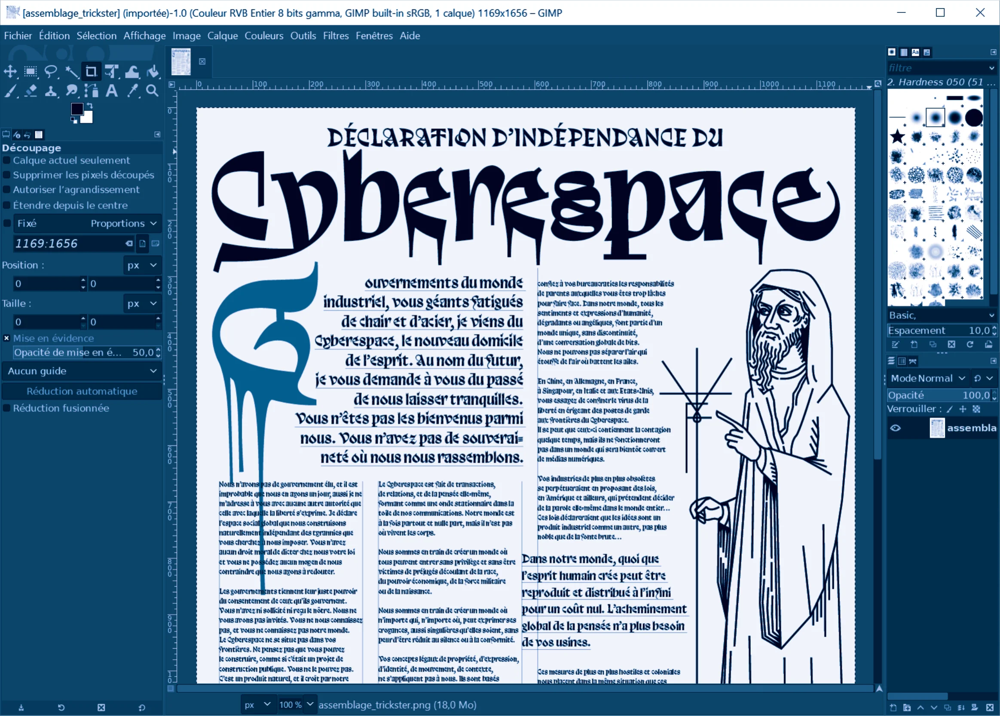
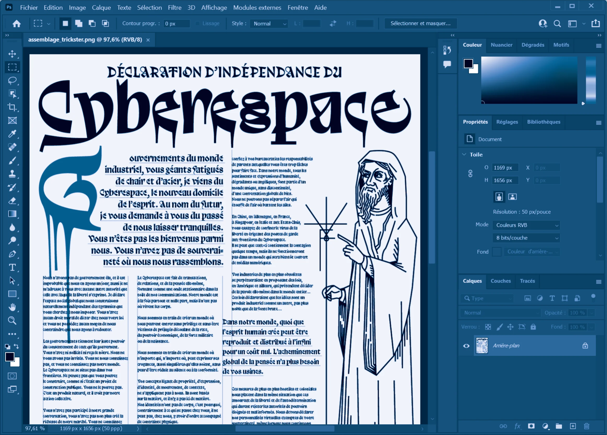
En haut, l'interface du logiciel
libre de dessin
matriciel Gimp, en
bas l'interface de Photoshop, un logiciel
propriétaire équivalent
produit par Adobe.
Toutes deux contiennent une affiche reprenant la
Déclaration d'indépendance du Cyberespace, de John Perry Barlow, et
mise en page par Anton Moglia. La déclaration avait pour but de
soutenir l'idée qu'aucun gouvernement ni aucune entreprise n'a le
droit de s'approprier Internet.
Malheureusement aujourd'hui, certaines dérives de l'utilisation
d'internet guidées par la recherche de profit nuisent à la
liberté et
la vie privée de l'utilisateur.
[captures d'écran]
Reprendre le contrôle sur ses outils
Une dépendance logicielle
Le designer questionne sans cesse les moyens graphiques qu'il met en
œuvre, mais la question des logiciels reste souvent ignorée.
La
suite monopolistique Adobe Creative Cloud¹⁰ est
généralement
l'unique solution, avec une chaîne de production qui dirige toutes
les pratiques des designers comme le souligne Anthony Masure¹¹ : La chaîne graphique se réduit ainsi progressivement à un seul acteur
qui concentre tout le pouvoir dans un schéma pyramidal.¹².
C'est une usine du créatif qui vise la productivité dans la démarche
créative, jusqu'à la recherche de clients avec la plateforme
Bēhance¹³.
Cette logique pousse à créer des outils où l'utilisateur, lui, se
retrouve cantonné à évoluer dans un environnement à l'apparence
simpliste, où tout semble facile à l'utilisation et n'a ainsi plus à
questionner ses usages.¹⁴. Si Quentin Creuzet¹⁵ parle ici de
l'usager du Web, le designer s'inscrit dans le même environnement
au
travers d'Adobe, qui propose des produits voulant effacer toute
difficulté au profit de l'efficacité et —selon eux— de la
créativité, menant de fait le designer à ne plus questionner ses
outils.
Une forme de dépendance est créée, et ce dès l'enseignement reçu, où
la suite Adobe est privilégiée. Le designer n'est plus maître de son
outil, il l'utilise par défaut parce qu'il devient la norme. Il
semble de fait nécessaire de se tourner vers des outils plus ouverts
pour ne pas s'enfermer dans une logique de productivité¹⁶.
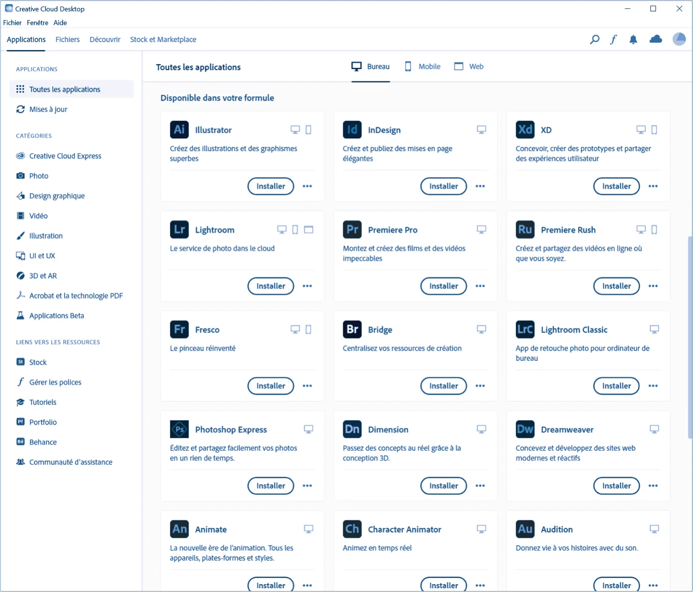
Interface de l'application Creative Cloud permettant l'installation
facilitée des produits d'Adobe.
[capture d'écran]
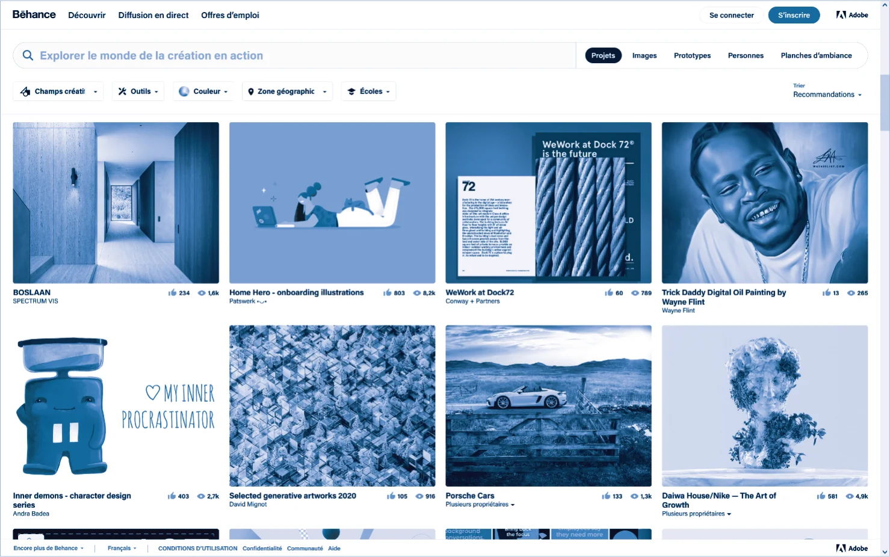
Interface de l'application web Bēhance
présentant
diverses créations des utilisateurs des produits d'Adobe. [en ligne]
behance.net
Des outils inadaptés
Outre un problème de dépendance, les outils d'Adobe ne semblent plus
toujours adaptés à la pratique du designer. Depuis leur création,
ces derniers n'ont en effet que très peu évolué, ne connaissant que
de légers changements d'interface ou d'expérience
utilisateur¹⁷.
Le designer Mitch Paone¹⁸ fait part des
limitations d'AfterEffects¹⁹
pour certains de ses projets, ce qui l'a mené à créer ses propres
outils lui conférant plus de contrôle dans l'animation typographique
générative.²⁰ La graphiste Nolwenn Maudet²¹ rapporte des constats
similaires. Les logiciels sont calqués sur des pratiques
manuelles
antérieures à la PAO²² et dissocient la créativité de l'utilisation
de l'outil. Cela a mené cette designer à en imaginer de nouvelles formes qui
proposent plus de liberté, et à explorer la programmation.²³
En
effet, le développement informatique est aujourd'hui choisi par de
nombreux graphistes dans l'objectif d'avoir un contrôle total dans
la création. Par exemple, Paged.js²⁴ permet de
faire de la mise en
page à partir des langages du Web, tandis que d'autres logiciels
libres comme Blender²⁵ utilisent un système nodal²⁶ liant un peu
plus programmation et interface. Malgré cette liberté, le
développement implique des connaissances spécifiques et la perte
d'une interaction plus naturelle²⁷ développée
avec la révolution du
WYSIWYG²⁸.
Interface de l'application After Effects par Adobe. [capture d'écran]
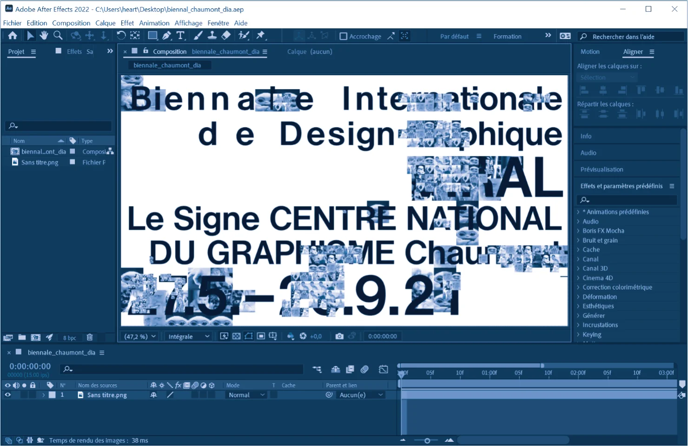
A l'intérieur se trouve une affiche
typographique générative réalisée par le studio DIA pour la
Biennale Internationale de Design Graphique à Chaumont de 2021.
Elle a été réalisée avec un logiciel créé par le studio.
[en ligne]
dia.tv/project/chaumont-biennale
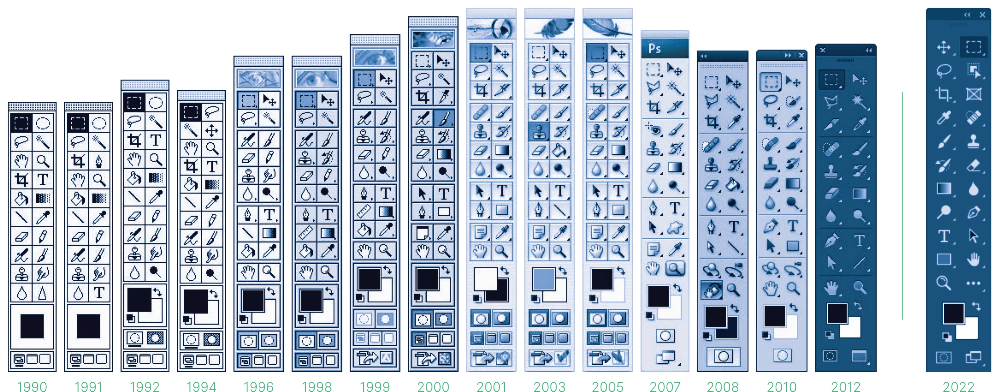
Illustration des différentes versions de la barre d'outils de
Photoshop depuis son lancement public en 1990 jusqu'à aujourd'hui.
[captures d'écran] & [en ligne]
hongkiat.com/blog/evolution-of-photoshop
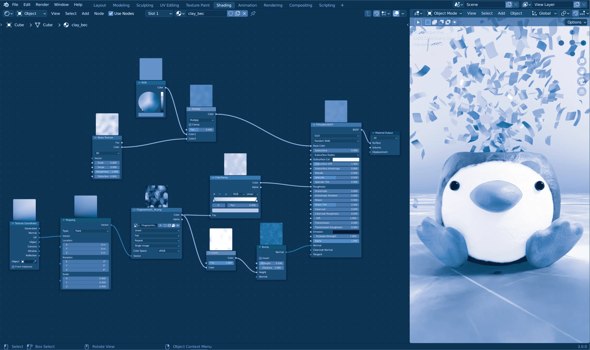
Interface de Blender, avec un exemple de système nodal
sur la
gauche, permettant de créer la texture du bec et des pattes de Tux
(mascotte de Linux) stylisé sur la droite. Création personnelle.
[capture d'écran]
Cet attachement à des outils inadaptés est d'autant plus néfaste que
seuls les logiciels Adobe peuvent ouvrir leurs fichiers
(basés sur
des formats propriétaires), conduisant à une nécessité pour tous de
se soumettre à l'abonnement à la suite créative.
Comme le dit OSP²⁹, un collectif ne travaillant
qu'avec des outils
libres, […] il serait acceptable de payer un abonnement type Adobe
Creative Cloud si les formats de fichiers étaient libres et
documentés [...]³⁰. En effet, ces formats
de
fichiers sur lesquels
l'utilisateur n'a aucun contrôle limitent ses possibilités,
puisqu'en plus de le forcer à utiliser un type de logiciel,
ils
posent des questions importantes sur la pérennité de ses données
captives de la volonté d'Adobe.
À l'inverse, du côté des logiciels libres, tout format
créé est
extrêmement documenté. Dans la majorité des cas, les fichiers sont
basés sur des standards ouverts tels que le format SVG³¹ pour
Inkscape³², qui permet, en plus de proposer une
approche WYSIWYG, de
modifier directement le code source du fichier.
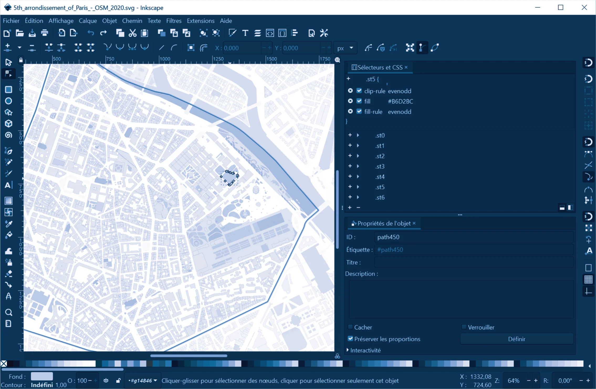
Interface de l'application Inkscape avec un fichier SVG du 5e
arrondissement de Paris provenant d'Open Street Map, un projet
libre et collaboratif de base de données géographiques. On peut
retrouver les paramètres du code source directement
modifiables
sur la droite. [capture d'écran]
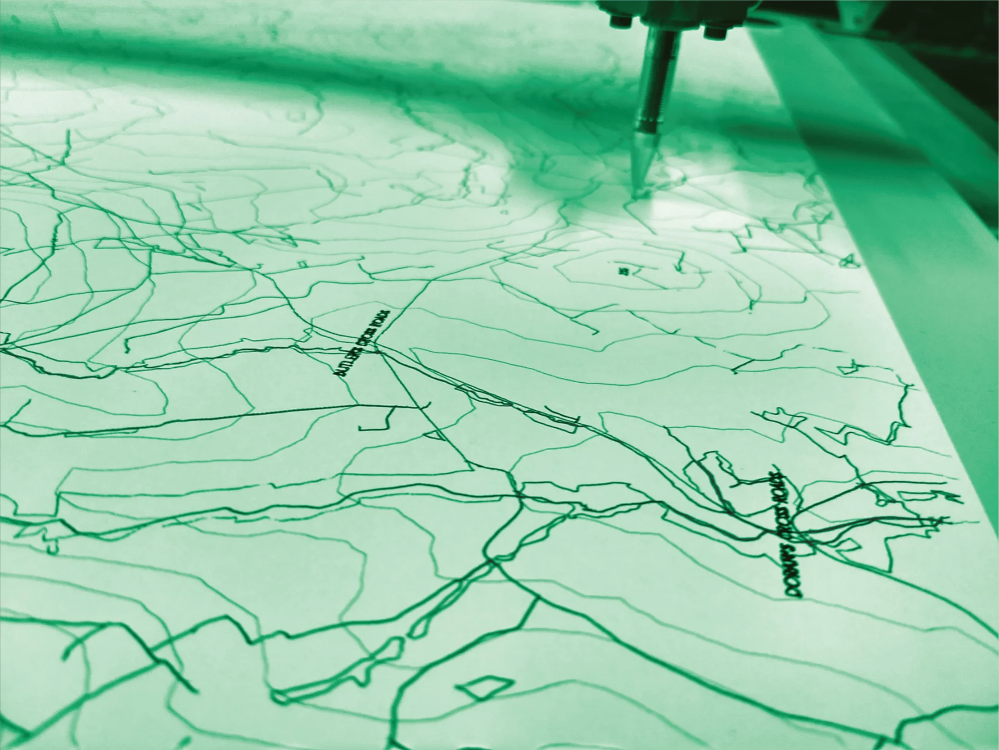
Photo d'une image créée à l'aide de données extraites d'Open
Street Map, modifiées dans Inkscape en utilisant le format SVG,
puis converties et envoyées à une machine dessinant l'illustration
finale. Le processus est réalisé à l'aide d'outils libres, et peut
être retrouvé sur le blog d'OSP.[capture d'écran] [en ligne]
blog.osp.kitchen/tools/osm-to-svg.html
Des créations réappropriables
S'il semble nécessaire de reprendre le contrôle sur nos outils
numériques au travers de logiciels vraiment adaptés à la
pratique du
graphiste et basés sur des formats ouverts, cela n'aurait que peu de
sens si nous ne repensons pas notre rapport à la propriété des
données. En effet, puisqu'un logiciel implique une pratique,
se
tourner vers le libre induit le fait d'utiliser et de produire des
fichiers sous licence libre.
Cette approche se retrouve principalement dans la création
typographique, à l'instar de Velvetyne³³, une
fonderie numérique qui
offre une grande diversité de fontes atypiques. Elle s'inscrit
pleinement dans l'éthique libre avec une liberté totale
d'utilisation et de modification des fontes : la seule demande est
de créditer l'auteur. Inter³⁴ est également une
typographie libre
complètement réappropriable. Elle se veut principalement utilitaire,
développée pour une lecture optimale sur les interfaces, et dans la
lignée du style International.
À l'ère d'Internet où tout est réapproprié, nous partageons
sans
nécessairement penser au cadre légal de nos utilisations et
productions. Pour soutenir ce droit à la réappropriation, le choix
des licences appliquées à nos créations devrait être
conscient.
Page d'accueil de Velvetyne. [en ligne]
velvetyne.fr
Une connaissance partagée
L'utilisation de logiciels et fichiers plus ouverts ne
devrait pas
se limiter à un usage personnel, mais aussi mener à un partage de la
connaissance et des sources de la création, ce qui pose des
questions d'archivage.
Raphaël Bastide³⁵, au travers de Fragile Forge³⁶, nous partage les
logiciels qu'il développe. Leurs fichiers et codes sources sont
aussi disponibles grâce au logiciel de
versionnage³⁷ Git³⁸, au
travers de la plateforme collaborative GitLab³⁹.
Tous deux sont très
utilisés par les développeurs afin de conserver différentes versions
du code, créer des fork⁴⁰, et partager les créations. OSP a bien
compris son intérêt dans le domaine du design en basant sur Git le
projet Visual Culture⁴¹. Il permet d'avoir un
aperçu visuel
travaillé des images et modifications appliquées à un projet, ce qui
permet le partage des sources de leurs créations au sein d'un
archivage clair⁴².
La pratique du designer devrait ainsi être tournée vers un objectif
de partage des données, qui peuvent être utiles à l'apprentissage de
tous.
En bas, la page GitLab du projet Each page a function par Raphaël
Bastide qui est à la fois une publication imprimée sortie en 2019, et des
programmes libres spécifiquement développés pour le projet que l'on peut
retrouver sur Fragile Forge. Elle permet de remettre en questions les outils
que l'on utilise dans notre pratique, et ainsi d'explorer d'autres manières de
créer. [en ligne]
gitlab.com/raphaelbastide/epaf
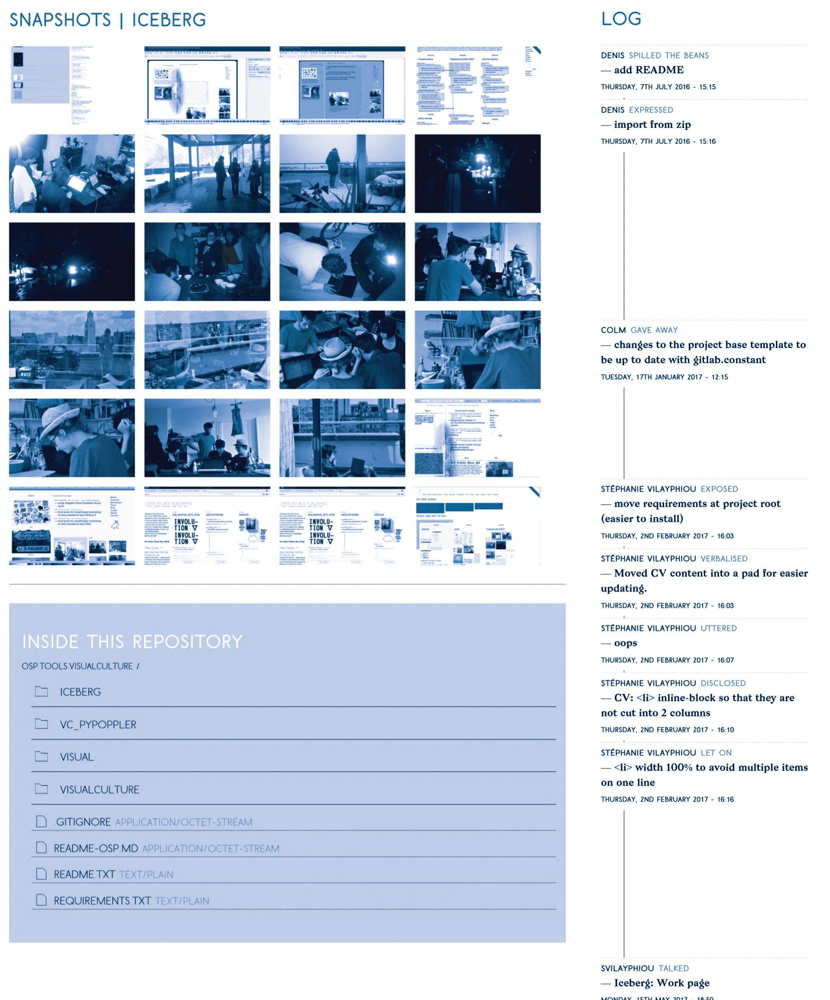
Exemple d'un projet utilisant Visual Culture pour être présenté,
ici le projet Visual Culture lui-même. On retrouve une
visualisation des images contenues à l'intérieur, l'arborescence
du projet, mais aussi un historique des actions effectuées, ici
sur la droite. [en ligne]
osp.kitchen/tools/visualculture
Un design fait pour l'humain
Si le design implique le partage et la diffusion de connaissances,
il implique également de questionner son usage.
Comme le souligne Quentin Creuzet, certaines dérives de l'usage du
Web, renforcées par le travail du graphiste, mènent à un espace où
le capitalisme de surveillance règne⁴³. Anthony
Masure nous pose
ainsi cette question : Où situer alors le travail du designer ?
Travaille-t-il pour l'utilisateur ou pour le profit des usages que
les firmes privées souhaitent faire de cet espace ?⁴⁴.
Le graphisme est en effet un outil puissant qui utilise le visuel
afin d'atteindre l'individu. Créons-nous pour aider l'usager, ou
pour le guider vers une action prédéfinie ? Puisque le rôle du
graphiste est, à mon sens, de mettre en avant l'information et de la
rendre accessible, il me semble nécessaire de repenser notre
pratique, d'aller vers un design pour l'humain plutôt que de
l'exploiter à d'autres fins.
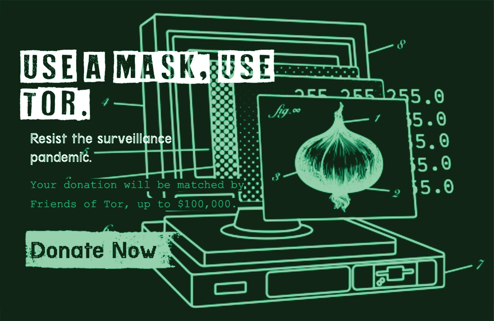
Illustration Use a mask, use Tor, provenant de la
campagne de communication de 2020 pour une levée de dons du projet
Tor, un réseau informatique mondial et décentralisé superposé à
internet. Il sert à naviguer de manière totalement
anonymisée en évitant donc d'être perpétuellement surveillé sur le
Web, et permet d'accéder à ce qui est appelé le dark
web. [en ligne]
blog.torproject.org/friends-of-tor-match-2020
Conclusion
Il semble ainsi que la pratique du designer peut être en désaccord
avec les intentions des éditeurs de logiciels
propriétaires. Ils
mettent en place des systèmes qui soumettent le graphiste à des
logiciels parfois inadaptés, en lui faisant oublier la
possibilité
d'accès à d'autres outils, voire en l'empêchant d'y accéder par
l'usage de formats fermés dont il dépend.
Il semble donc urgent de se diriger vers des logiciels plus
ouverts
qui impliquent des pratiques plus proches du travail du designer, et
de fait vers le logiciel libre qui propose une liberté
totale à
l'utilisateur, par la philosophie sur laquelle il repose et les
licences qui en découlent. Il nous permet donc bien de
ré-envisager
notre pratique en allant vers un graphisme de partage, où les
informations sont accessibles à tous.
Pourrait-il y avoir un changement de paradigme à l'instar du milieu
informatique se tournant vers le logiciel libre, ou à
minima open
source ? Cela n'implique-t-il pas de se diriger vers un design où le
code devient la norme pour plus de liberté ?
Si de nombreuses solutions libres existent, j'ai pu découvrir au cours
de mes recherches que leurs domaines d'application et usages sont
rarement bien présentés. Il me semblerait intéressant de créer une
plateforme de sensibilisation autour de ces différents outils et des
productions graphiques qui y sont associées car il y a un enjeu
d'éducation et d'information, sans quoi ces logiciels resteront
de
l'ordre de l'utopie.
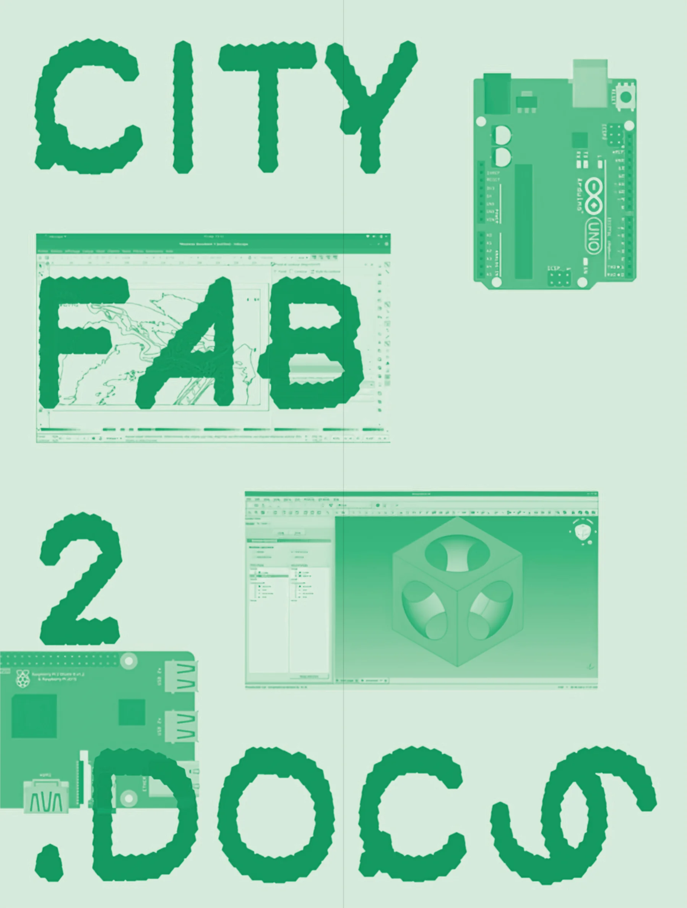
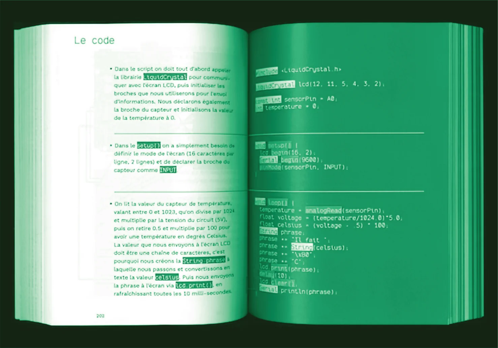
Couverture et double page réalisées avec Paged.js par Amélie Dumond
en 2020 pour la documentation du fablab CityFab2 à Bruxelles.
Le concept de Fablab a été créé par Neil Gershenfeld, professeur au
MIT (Massachusetts Institute of Technology). Il créera un cours
ouvert à des étudiants qui vont venir utiliser les machines
sophistiquées du MIT pour réaliser ce qu'ils veulent.
Ce concept va être exporté à l'international et porte le nom de
Fablab, signifiant fabrication laboratory. C'est un espace
ouvert au grand public, où les gens peuvent venir fabriquer des
choses avec les machines professionnelles proposées. Gratuits ou
payants, il est souvent possible d'avoir de l'aide pour réaliser ses
projets.
Cette édition s'inscrit donc pleinement dans un graphisme plus ouvert
se rapprochant de l'éthique libre. [en ligne]
pagedjs.org/examples
Références
Ouvrages
MASURE, Anthony. Design et humanités numériques, Paris : éd. B42,
coll. Esthétique des données, 2017.
CREUZET, Quentin. Croisades graphiques – le minimalisme à l'ère
du néolibéralisme, in Pli, n° 6, septembre 2020, p. 117-124.
Entretien avec PAONE, Mitch. Le mouvement plus que la matière,
in BackOffice, n° 4, avril 2021, p. 46, 53.
Free Software Foundation ; traduit par COUCHET, Frédéric et
PRADENE, Karl. Qu'est-ce que le logiciel
libre ?,
4 novembre 2021. [en ligne], disponible sur :
https://www.gnu.org/philosophy/free-sw.html,
consulté le 3 janvier 2021.
MASURE, Anthony. Visual Culture, Open Source Publishing, Git et
le design graphique, in Strabic, 2014. [en ligne], disponible sur :
https://strabic.fr/OSP-Visual-Culture,
consulté le 3 janvier 2021.
TAFFINS, Nicolas. Dans les recoins de la double page (Paged.js à
la maison, saison 2), in Polylogue, 1 mars 2021. [en ligne], disponible sur :
https://polylogue.org/apres-la-page-la-double-page/,
consulté le 3 janvier 2021.
Projets
ABBINK, Mike. IBM Plex, 2018. [en ligne], disponible sur :
https://www.ibm.com/plex/,
consulté le 3 janvier 2021.
ANDERSON, Rasmus. Inter, 2016. [en ligne], disponible sur :
https://rsms.me/inter/,
consulté le 3 janvier 2021.
BASTIDE, Raphaël. Each Page A Function, Paris : éd. LeMégot, 2019. [en ligne], disponible sur :
https://raphaelbastide.com/epaf/zine/,
consulté le 3 janvier 2021.
Interview réalisée en visioconférence sur Jitsi [Logiciel de
visioconférence libre] avec Raphaël Bastide, professeur en art et
graphisme, le 1er novembre 2021 à 15:00, durant 1h15min.
La retranscription suivante représente une partie réduite et
retravaillée de l'échange global. [voir le site web pour l'échange
complet]
Une présentation de ton parcours en quelques phrases ?
J'ai fait des études à la fois techniques et artistiques. J'ai
commencé à l'IUT [Institut Universitaire Technologique] de Bordeaux,
qui s'appelait Services et Réseaux de Communication. Il avait une
petite entrée sur le graphisme qui m'avait bien plu. J'ai par la
suite enchaîné sur une école de graphisme à Toulouse qui ne doit
plus exister, ça n'était pas une très bonne école. Mais j'ai
beaucoup appris seul et j'ai découvert l'Internet social des
premiers réseaux sociaux entre 2000 et 2005, où des artistes et des
graphistes commençaient à faire des expérimentations faites pour
Internet.
Donc ça a influencé leurs propres pratiques et ça m'intéressait
beaucoup. J'ai découvert peu après le Net.art [créations
généralement interactives, conçues par et pour Internet]. Là
j'y ai
trouvé un vrai intérêt, c'était vraiment de l'art et ça l'est
toujours d'ailleurs, de l'art fait pour Internet en tant que
médium
artistique.
J'ai approfondi tout ça, j'ai fait des recherches personnelles en
parallèle de mes études de graphisme. Puis j'ai aussi découvert le
logiciel libre et j'ai décidé d'aller à l'ERG [École de
Recherche
Graphique] de Bruxelles, où j'ai fait un Master artistique en Arts
Numériques avec option typographie. J'ai ainsi pu continuer
d'explorer cette partie du graphisme, dans l'art numérique.
Tu publies quasiment tous tes travaux sous licence libre,
quelle est
ta volonté derrière son utilisation ?
En fait, aujourd'hui c'est plus un non choix dans le sens où je ne
choisis plus de distribuer sous une licence libre, c'est
plutôt
quelque chose que je fais naturellement, c'est rentré dans ma
méthodologie de travail et c'est aussi une façon pour moi de
contribuer à un ensemble plus grand, dans la mesure où j'utilise
beaucoup de choses qui ont été faites par d'autres.
Donc a priori je vais redistribuer ce que je fais à celles et ceux
que ça intéresse, si jamais ils existent.
Et donc voilà, c'est plus faire partie d'un flux qui m'intéresse, et
les caractéristiques ainsi que la méthodologie qui l'accompagnent me
conviennent tout à fait, conviennent à ma façon de travailler. Tout
ce qui est versioning [création de versions avec un logiciel de
versionnage], choix de licence, collaboration quand elle
existe, la
documentation, tout ça m'intéresse profondément.
À la limite, je documente pour les autres pour ne pas documenter
pour moi, c'est une espèce de rigueur de travail qui me permet de
travailler efficacement.
Je pense qu'à l'origine j'ai peut-être un petit problème de rigueur
qui la plupart du temps est comblé par l'idée que d'autres vont voir
ce que je fais, ou moi-même à l'avenir. C'est-à-dire qu'il y a un
moi dans dix ans qui va retourner sur ce que je fais et qui va se
dire Ha heureusement que j'avais marqué ce truc ! ou ha tant
pis, il y a pas ça, etc.
Que peux-tu me dire du fait qu'il y ait plus de diversité logicielle
dans le domaine de la comptabilité que dans le design graphique
comme le souligne Franck Adebiaye ?
MASURE, Anthony. Visual Culture, Open Source Publishing, Git et le
design graphique, in Strabic, 2014. [en ligne],
disponible sur :
https://strabic.fr/OSP-Visual-Culture, consulté le 3
janvier 2021.
Je dirais que je connais l'un mais pas l'autre, contrairement à
Franck, donc je ne pourrais pas dire pourquoi il n'y a pas de major
dans la comptabilité, même si j'ai peut-être une idée. Mais en tous
cas je suis attristé de constater qu'effectivement il y a des
logiciels qui ont complètement dominé le marché et les usages
du
design graphique, et je comprends pourquoi. Parce qu'en fait rien
n'était en place pour les contrer. Maintenant, c'est quelque chose
qui a tendance à être un peu moins vrai. J'ai l'impression que la
suite Adobe a un peu plus de mal à garder sa place de marché.
Malgré tout, parmi les livres qui sont dans une librairie
aujourd'hui, je pense que 99,9 % ont été designés avec InDesign
[logiciel propriétaire de PAO lancé en 1999 par Adobe].
Donc c'est
assez important, et je pense que ce qui est le plus intéressant dans
cette citation de Franck, c'est le fait qu'elle existe. C'est-à-dire
qu'a priori, ce manque de diversité n'embête personne.
Et moi, ce qui m'intéresse là-dedans, c'est qu'il y a des gens, une
poignée de personnes qui veulent dire non.
Les formes éditoriales au sens très large que l'on produit
aujourd'hui sont issues des mêmes boîtes noires qui sont des
produits d'entreprises et qui ne sont pas remises en question. Qu'il
y ait des boîtes noires, il n'y a aucun problème, il y en a partout.
Des boîtes noires, on en conduit, on en a dans les poches. Mais là,
le problème c'est qu'il y a très peu de critiques par rapport à ça
et la diversité manque cruellement. D'ailleurs on voit que dès qu'il
commence à y voir un peu plus de diversité technologique, eh bien ça
permet d'avoir de grandes respirations culturelles et esthétiques.
Ça permet d'avoir des émancipations, mais aussi de donner la parole
à des minorités. Tout cela est très lié en fait. Le logiciel
que
l'on utilise a un impact à la fois sur les productions et les
producteurs.
Que penses-tu des outils de production graphique libres plus génériques tels que Scribus
[logiciel libre de PAO] comparé à
d'autres comme Paged.js [logiciel libre de PAO basé sur le
développement web] ?
Je vois ça comme un dégradé. C'est-à-dire qu'il y a plusieurs
niveaux, il y a plusieurs types de logiciels. Il y a autant
d'interfaces que de créateurs d'interfaces. L'équipe derrière
Inkscape ou l'équipe derrière Paged.js ne sont pas du tout les
mêmes. Elles n'ont pas du tout la même culture du logiciel,
n'ont
pas le même stack, donc la pile d'outils n'est pas la même non plus.
L'âge du programme n'est pas le même et les usagers ne sont pas les
mêmes.
Inkscape [logiciel libre destiné à la création d'images
vectorielles], par exemple, est un logiciel qui
s'adresse à un
public très large, alors que le Paged.js s'adresse à des
développeurs qui vont devoir l'appeler comme une librairie dans un
programme.
Je trouve que cette granularité de différences est hyper saine parce
qu'il y a aussi beaucoup de pratiques différentes et d'usages.
Moi-même, ça m'intéresse de me frotter à tout ça en tant qu'auteur
de logiciels ou de programmes, ou de je ne sais pas quoi
d'ailleurs.
Ça m'intéresse de jouer à faire des choses très arides, ou au
contraire de travailler sur des interfaces qui vont beaucoup plus
caresser l'utilisateur dans le sens du poil en lui proposant des
choses qu'il connaît déjà.
En fait, ça serait trop triste de n'avoir qu'un type de logiciel. Et
d'ailleurs, il y a beaucoup de gens qui disent que le logiciel libre
c'est du mauvais logiciel, ou que les formes du libre sont
des
formes moches.
C'est fondé dans le sens où les gens font des formes moches avec du
logiciel libre, mais c'est peut-être parce que les gens
qui
utilisent le libre sont déjà persuadés qu'ils ne peuvent faire que
ça, c'est le serpent qui se mord la queue. Mais en y repensant,
c'est un argument qui n'existe plus vraiment. Ce que je dis, c'est
qu'il y a énormément de choses très intéressantes qui se sont faites
avec des logiciels libres comme un navigateur tel que
Firefox
[navigateur libre développé par la Mozilla Foundation depuis 2003].
Firefox ne produit pas des formats moches. Firefox permet de
développer toutes les interfaces de sites web que l'on voit
aujourd'hui.
Donc il n'y a pas de logiciels qui produisent des formes
moches, il
n'y a que des individus qui produisent des formes moches et j'irais
même jusqu'à dire qu'il n'y a que des individus qui jugent que ces
formes sont moches. Personnellement ça m'intéresse énormément de
travailler avec ces formes dites moches parce qu'elles font partie
d'un certain folklore et qu'elles créent une histoire non seulement
au logiciel libre, mais plus globalement à l'histoire
de
l'interface, à l'histoire du web design, à l'histoire des
communautés en ligne.
[Conversation finale autour de ma problématique de mémoire]
Là où il y a aussi un truc à creuser, c'est dans les pratiques
libres du graphisme. Il y a des choses qui émergent, qui ne peuvent
pas être faites avec des logiciels
propriétaires. Il y en a plein
d'autres qui peuvent être faites avec du logiciel
propriétaire sans
aucun problème. Mais les outils libres, les interfaces, les outils
sur mesure ont un impact esthétique sur certaines pratiques qui n'a,
à ma connaissance, jamais été cartographié. Ça pourrait être
intéressant de voir dans quelle mesure les outils et les
méthodologies libres peuvent influencer les choix esthétiques.
Est-ce qu'on ne peut pas en dégager une scène ? Ne peut-on pas
retrouver des particularités qui sont bien définissables, bien
associables avec le logiciel libre, et donc
cartographier et trouver
les acteurs ?
La première chose qui me vient c'est l'acceptation et la mise en
avant de l'erreur, mais bien entendu, il n'y a pas que ça. Il y a
par exemple la typographie vernaculaire numérique. Là il y a quelque
chose d'intéressant, la question de la mise en page avec des outils
de web2print, du fanzine. Quelles traces peuvent laisser des
logiciels comme Inkscape ou Paged.js, est-ce qu'il y a des
traces
graphiques ? C'est peut-être un peu long à explorer, mais je pense
que c'est hyper intéressant.
Il y a aussi la question de la diffusion de la culture du graphisme
libre. Il y a eu des choses, il y a eu le
Libre Graphics Magazine [magazine annuel sur la création
graphique libre qui ne paraît plus depuis 2015], les
Libre Graphics Meeting [rencontre internationale annuelle
sur les outils de création graphique libre]. Il y a eu des blogs, il
y a eu des choses, mais il n'y a pas d'énergie qui rassemble. On
essaie de le faire avec PrePostPrint [label et site web qui met en
avant des publications et ressources basées sur des créations libres
expérimentales], ça reste très niche sur la mise en page et la
publication, mais on a un compte Twitter, on publie des trucs quand
il y a des étudiants intéressants.
Ça manque d'un truc qui fédère autour de la diffusion, de la culture
et des possibilités du graphisme libre. Parce qu'il y a des choses,
il y a des blogs qui parlent beaucoup de Gimp [logiciel
libre
destiné à la création d'images matricielles],
Inkscape, mais ils
t'apprennent à faire des coccinelles en vecteurs.
C'est pas inintéressant, mais ça manque de quelque chose qui
intéresse les étudiants, les professeurs, les professionnels du
design graphique.
Nolwenn Maudet
Interview réalisée en visioconférence sur Jitsi avec Nolwenn Maudet,
designer d'interaction et chercheuse en design, le 4 novembre à
09:00, durant 45min.
La retranscription suivante représente une partie réduite et
retravaillée de l'échange global. [voir le site web pour l'échange
complet]
Peux-tu faire une présentation en quelques phrases de ton parcours ?
Je m'appelle Nolwenn Maudet, je suis designer d'interaction et
enseignante chercheuse, maître de conférences et enseignante à
l'université. J'ai plutôt un parcours design produit, et j'ai été
formée à l'école Boulle avec un BTS et un DSAA. Je me suis rendu
compte par la suite que j'étais plus intéressée par le numérique. De
fait, j'ai voulu compléter mes études après mon DSAA avec un Master
que j'ai réalisé à l'UTC Compiègne, qui était dédié à l'expérience
utilisateur.
Ce Master m'a ainsi ouvert au monde de la recherche, grâce à de
nombreux enseignants extrêmement intéressants, et j'ai pu découvrir
un laboratoire qui faisait ce qui s'appelait de l'interaction humain
machine, qui m'a menée à faire ma thèse en informatique, mais qui
était en réalité plus liée au design.
Ensuite, je suis allée faire ce qui s'appelle un post-doc,
c'est-à-dire un séjour de recherche contre un poste non permanent de
chercheur à l'Université de Tokyo, pour ensuite obtenir un poste
d'enseignante chercheuse à l'Université de Strasbourg, où je suis
toujours actuellement.
Tu as publié ta thèse sous licence libre, c'est quelque chose
que tu
appliques régulièrement dans tes projets ?
En effet, c'est quelque chose qui me tient vraiment à cœur. Avec le
numérique en particulier, je pense que les anciennes idées de la
propriété intellectuelle telles qu'elles pouvaient se faire dans le
design n'ont plus vraiment d'intérêt. Au contraire, je pense
qu'aujourd'hui il est beaucoup plus intéressant de partager ce qu'on
fait en tant que designer, et a fortiori quand on est chercheur.
Cela me semble aberrant que parfois les publications de recherche ne
soient pas accessibles à tout le monde, sachant que c'est l'argent
du contribuable, il n'y a pas de raison que la connaissance ne soit
pas accessible à tous.
Même au-delà de cette raison purement financière, il y a aussi une
raison plus idéologique. Pour moi, la connaissance, c'est quelque
chose qui devrait être accessible à tous. Ça n'a que des bénéfices,
donc oui, c'était vraiment important que ma thèse soit accessible en
open source. Si je ne l'avais pas fait, les seules personnes qui
auraient eu accès à cette recherche auraient probablement été les
grands groupes du type Google, Facebook, Adobe qui auraient eu les
moyens de payer l'accès aux librairies souvent anglo-saxonnes dans
le milieu de la recherche, alors que moi je m'intéressais beaucoup
plus à la communauté francophone. Je pense que mettre cette licence
était le seul moyen pour la rendre accessible.
Quel est ton rapport au libre dans le reste de tes productions ?
Je dirais que cela tourne principalement autour des licences
que
j'attribue à mon travail plus que les outils. Je suis vraiment une
supportrice du libre mais paradoxalement, j'utilise peu de logiciels
libres. Pour tout ce qui touche à la production, je pense que je
n'utilise presque que des outils sous licencepropriétaire.
Malgré tout, j'utilise parfois des outils libres, comme dans l'un
des derniers projets réalisés avec mon collègue Thomas Thibault
[designer numérique et cofondateur] du collectif BAM [un studio de
design favorisant l'autonomie du designer et de l'utilisateur dans
ses productions]. Ne pas le mettre sous cette licence irait à
l'encontre de tout ce que je défends dans mes projets eux-mêmes,
puisque la plupart s'intéressent à un empouvoirement,
c'est-à-dire redonner des outils, des manières pour que tous,
designers et utilisateurs, puissent se réapproprier le monde du
numérique.
Cela me tient vraiment à cœur, et les licences libres en
particulier
sont vitales pour ça.
Je collabore ainsi régulièrement avec le collectif BAM, au sein
duquel il y a une vraie démarche pour utiliser des outils qui soient
libres mais ça n'est pas toujours facile. Par exemple, un choix qui
a été fait et qui est le mien aussi, a été d'abandonner la suite
Adobe au profit d'une suite qui s'appelle Affinity [suite de 3
logiciels propriétaires semblables à la suite
Adobe].
Et je pense que sur ce point on est de plus en plus nombreux, même
si ce n'est pas la meilleure solution puisque ce ne sont pas des
outils libres. Malgré cela, cette utilisation a tout de même le
mérite de faire exister une solution qui ne soit pas Adobe et de
réduire un monopole.
Par ailleurs, j'utilise de moins en moins de logiciels dans
ma
pratique personnelle. La suite Affinity m'est utile de temps à
autres, mais au quotidien je n'utilise pratiquement plus que la
programmation. L'utilisation de langages ouverts tels que ceux du
web fait que oui, j'utilise en réalité une grande partie du temps
des outils libres.
Que peux-tu me dire du fait qu'il y ait plus de diversité logicielle
dans le domaine de la comptabilité que dans le design graphique
comme le souligne Franck Adebiaye ?
MASURE, Anthony. Visual Culture, Open Source Publishing, Git et le
design graphique, in Strabic, 2014. [en ligne],
disponible sur :
https://strabic.fr/OSP-Visual-Culture, consulté le 3
janvier 2021.
Tel était aussi mon constat, et c'est notamment la raison pour
laquelle j'ai voulu faire ma thèse. Je trouve en effet que c'est
d'une extrême tristesse et je pense qu'il y a plusieurs facteurs qui
y sont liés : historiques, politiques, contextuels, mais aussi le
fait que pendant très longtemps cette question de l'outil n'a pas du
tout été un souci pour le designer. Ils ont considéré qu'il y avait
un outil sans réellement se poser la question, sans se demander si
les outils utilisés pouvaient avoir un impact sur leur pratique.
C'était Adobe ou rien.
Par ailleurs, j'ai adoré mes études et la manière dont on m'a
enseigné le design. Mais l'outil était vraiment un point noir, un
angle mort, ce qui m'a beaucoup touchée. Lorsque j'ai commencé à me
pencher sur le sujet, j'ai pu voir la richesse des pratiques des
designers, qui, étant créatifs par nature, dépassent toujours les
outils.
Nous avons un outil qui est exactement le même, mais il n'y a
pourtant pas un seul designer qui l'utilise de la même manière que
l'autre, qui crée la même chose, puisque par définition dans nos
métiers on réinvente des choses, on cherche à inventer son propre
processus. De fait, la créativité est bien plus du côté des
designers que du côté des outils.
Donc cet aspect du designer a entraîné ce problème faisant que l'on
partait toujours de la même base sans jamais la remettre en
question, ce qui est toujours un problème de nos jours me
semble-t-il. Ainsi, lorsque j'ai commencé ma thèse en 2014, tout
était très figé au niveau des logiciels type Adobe.
Par contre, il y avait un foisonnement énorme dans les années 2015 à
2017 du côté des logiciels dans les disciplines de l'UX [expérience
utilisateur] et de l'UI [interface
utilisateur], mais on est en
train de voir se passer exactement le même processus de
monopolisation aujourd'hui avec Figma [logiciel spécialisé
dans la
conception d'UX et UI]. Tout cela me semble alors presque lié à une
Taylorisation [systématisation de la production pour un rendement
maximum] des métiers du design faisant qu'il nous semble plus
pratique, plus efficace de se reposer sur un logiciel plutôt
que de
laisser une liberté aux personnes.
Que penses-tu des outils de production graphique libres plus génériques, tels que Scribus,
comparés à d'autres tels que
Paged.js ?
Je pense que c'est vraiment super que le libre et que cette
diversité existent, et je pense qu'il y a un vrai intérêt à aller
vers de la programmation qui offre une puissance, une liberté, un
pouvoir qui est assez incroyable et jouissif en tant que designer.
Pour autant, et c'est un peu mon regret, une chose que j'ai essayé
de dire dans ma thèse, c'est que je trouve cela triste qu'on ait si
rapidement abandonné les logiciels parce qu'on ne pense pas
de la
même manière quand on pense à travers la programmation ou quand on
pense à travers des interfaces graphiques, on ne visualise pas les
choses et on n'interagit pas de la même manière.
Je ne dis pas pour autant qu'il y a une façon qui soit meilleure que
l'autre. Je pense que les deux sont passionnantes. On peut faire des
choses différentes avec les deux, mais je suis vraiment persuadée
que la programmation seule a quand même des limitations sévères, il
y a des choses qu'elle n'offre pas de manière naturelle, une
facilité que l'on retrouve dans les logiciels à interfaces
graphiques. Je trouve dommage qu'il n'y ait que très peu
d'explorations actuellement sur des mécanismes d'interface graphique
qui offriraient de nouvelles manières de mettre en page, par
exemple.
Paged.js est une bibliothèqueJavaScript libre et open source, qui
permet de réaliser des mises en page de documents imprimables en
PDF directement depuis un navigateur. Cette bibliothèque est donc
semblable à un logiciel de PAO.
Ce projet s'adresse principalement au domaine de la production, et
a été initié en 2017 par Adam Hyde [créateur à l'initiative de
nombreux projets mettant en avant l'open source dans le milieu de
la publication, au travers de nouvelles manières de la repenser].
Il dirige des projets techniques, construit des plateformes, des
méthodologies au sein de Coko [Collaborative Knowledge]
Foundation, afin de soutenir la production et la publication de
documents et connaissances en open source.
Aujourd'hui, Julie Blanc [graphiste qui prépare actuellement une
thèse en ergonomie et design graphique, questionnant notamment la
mise en page et l'automatisation dans le milieu du graphisme] est
l'une des contributrices les plus importantes de ce projet, en
apportant notamment son savoir en CSS.
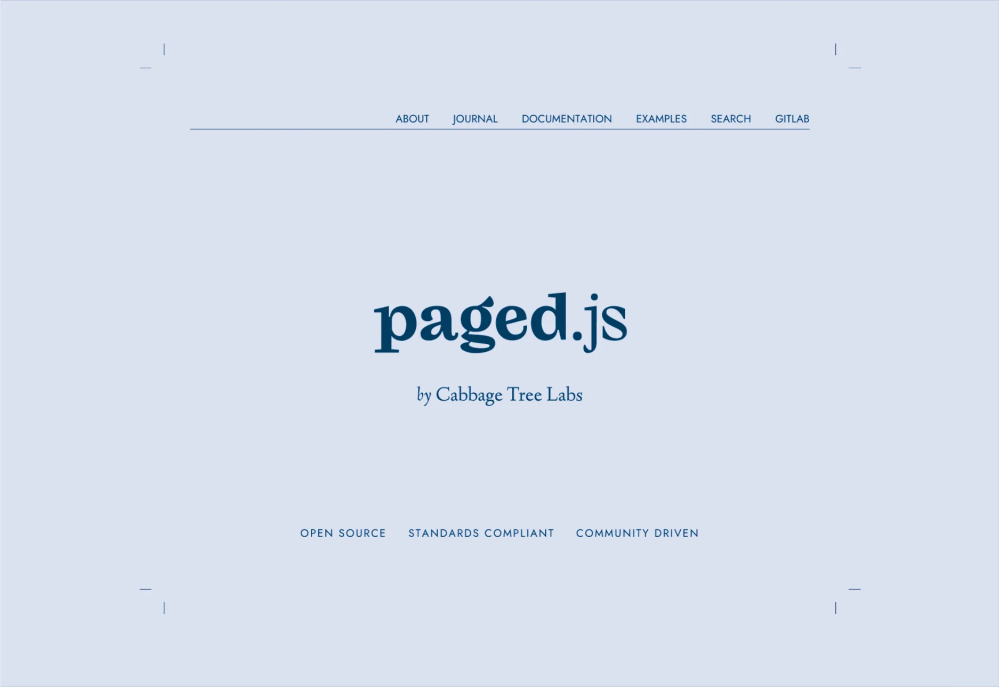
Capture d'écran de la page d'accueil du site Paged.js. HYDE, Adam.
Paged.js, 2017. [en ligne], disponible sur :
https://www.pagedjs.org,
consulté le 3 janvier 2021.
Paged.js est ainsi une bibliothèqueJavaScript qui va permettre
d'étendre les possibilités de langage de base du Web, telles que
le CSS, afin de l'adapter à la production
de mises en page. Cette
extension de langage s'appelle alors une prothèse
d'émulation,
puisqu'elle permet de faire supporter de nouvelles normes aux
navigateurs qui ne les supportent pas encore.
Le projet s'inscrit dans une démarche ancrée dans l'esprit du Web,
puisque les nouvelles fonctions ajoutées au CSS suivent les normes
de médias paginées publiées par le W3C.
Ainsi, grâce à cette bibliothèque et à
l'apprentissage de
certaines de ses nouvelles fonctions, il est possible de créer des
documents dédiés à la publication au sein même de son navigateur,
en utilisant les langages standards du web tels que le HTML et le
CSS. Avec un peu d'entraînement, n'importe
quel graphiste ayant
des connaissances sur la création de sites web peut créer des
objets de publication allant du fanzine à un livre plus
étoffé
[pour lequel Paged.js a été imaginé], au sein d'un navigateur. Il
y a ainsi cette volonté de créer un système complètement ouvert,
aussi accessible grâce à un GitLab, mais surtout un site web
très
bien documenté, que ce soit au niveau de la mise en place globale
d'un projet ou des divers petits détails de la bibliothèque.
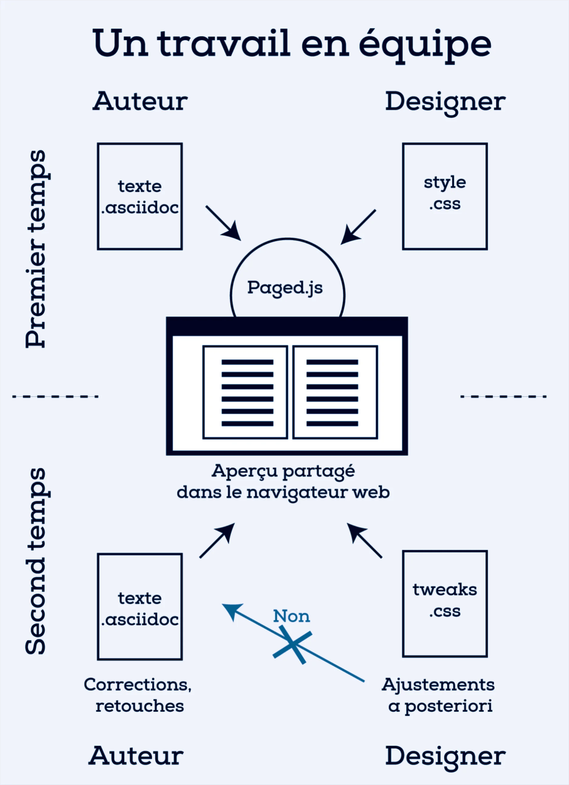
Image présentant la méthode de travail mise en place grâce à
Paged.js et citation suivante provenant de l'article : TAFFINS, Nicolas. Dans les recoins de
la double page (Paged.js à la maison, saison 2), in
Polylogue, 1 mars 2021. [en ligne], disponible sur :
https://polylogue.org/apres-la-page-la-double-page/,
consulté le 27 octobre 2021.
Liens au libre
Ce qui est intéressant ici, c'est que Paged.js permet de
complètement repenser la manière de faire de la mise en page, en
utilisant des standards et formats complètement ouverts. De plus, le
fait que la bibliothèque se base sur les
langages du web, donc des
langages de programmation, permet également de mettre en place
diverses expérimentations en utilisant des éléments génératifs
autant que des animations. Paged.js a de fait été repris par
PrePostPrint, qui est à la fois un label et un site web dont
l'objectif est de promouvoir des objets et des ressources graphiques
basées sur des créations expérimentales, libres, et bien
documentées. Il a pour but de rassembler divers logiciels et
travaux
utilisant des techniques d'édition expérimentales et d'aider à
rendre leurs projets et outils plus accessibles.
Cette bibliothèque permet également de
repenser la publication de
manière plus modulaire et plus ouverte, comme le souligne Nicolas
Taffin [concepteur graphique et éditeur], qui travaille aux éditions
C&F [dont il est le cofondateur avec Hervé Le Crosnier] :
L'auteur et le designer travaillent ensemble sur le livre, chacun
a ses fichiers. Au vu de la mise en page, chacun peut décider de
changer des choses, l'auteur peut couper du texte par exemple, le
designer peut déplacer des éléments, ajuster localement ses règles
de mise en page, mais en évitant d'intervenir dans le fichier de
l'auteur pour cela.
En effet, en travaillant directement chacun de son côté sur des
fichiers qui vont ensuite être réunis dans la mise en page finale,
il est possible de créer un livre où les textes de l'auteur ainsi
que les modifications du graphistes peuvent être appliquées en temps
réel grâce à un serveur hébergeant les fichiers, comme le fait
actuellement Nicolas Taffin au sein de la collection Interventions,
en utilisant ici NextCloud [site d'hébergement de fichiers et
plateforme de collaboration qui peut être auto-hébergée. C'est une
alternative libre au Drive de Google].
Ainsi, avec quelques idées et extensions, Paged.js peut devenir une
plateforme d'édition en temps réel, ce qui est notamment permis par
son ancrage dans une logique de logiciel libre. En
outre, Paged.js
met aussi en avant la question de la pérennité des fichiers. En
effet, là où des logiciels tels que InDesign [logiciel propriétaire
de PAO lancé en 1999] de Adobe
[éditeur de logiciels de création
propriétaire] utilisent des formats de fichiers propriétaires et
complètement opaques sur leur fonctionnement, Paged.js a la force de
proposer des formats de fichiers supportés par quasiment n'importe
quel logiciel d'édition de texte brut, puisque ce dernier
repose sur
des langages de programmation ouverts. Si on a ici un cas extrême
avec des langages web, il me semble néanmoins que les outils
libres
ont cette force de reposer sur des standards, et à minima sur des
formats de fichiers ouverts, permettant de fait d'avoir des
créations qui ne dépendent pas d'un seul outil, donc des créations
qui vont avoir la capacité d'être réutilisées dans le temps.
Visual Culture
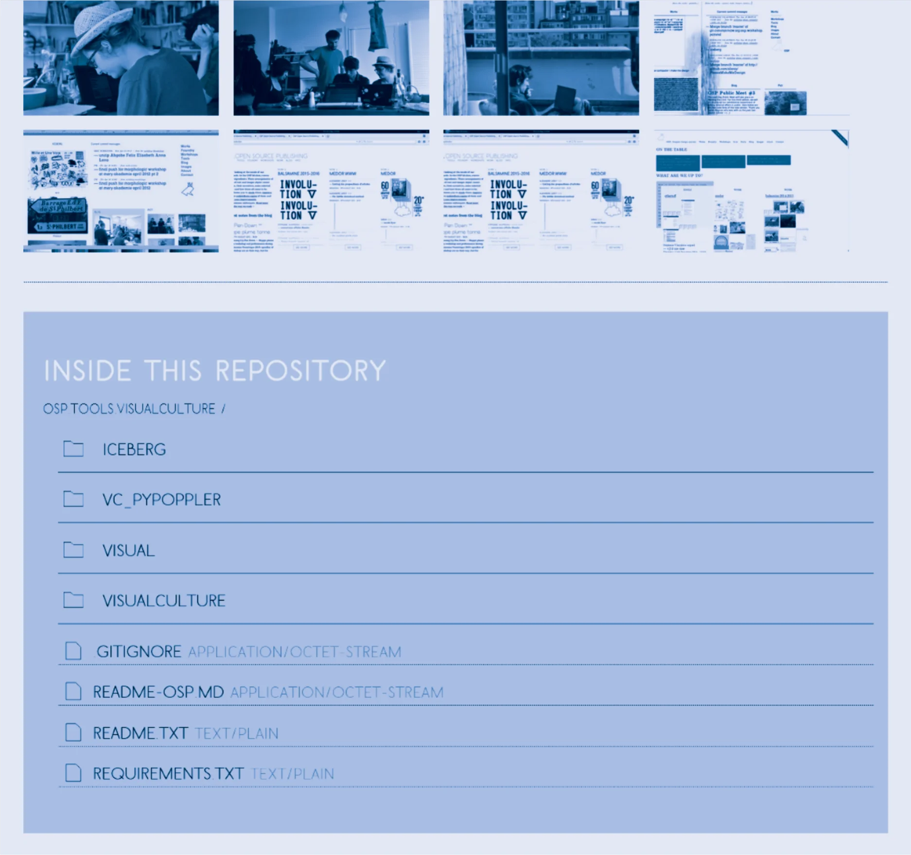
Capture d'écran de la page Visual Culture du site d'OSP. Collectif OSP.
Visual Culture, 2014. [en ligne], disponible sur :
http://osp.kitchen/tools/visualculture,
consulté le 3 janvier 2021.
Versionnage du visuel
Visual Culture est un projet libre qui utilise Git [logiciel de
versionnage décentralisé et développé par Linus Torvald, créateur
de Linux], une sorte de système d'archivage des versions du code
source d'un projet pour le visuel, lancé par le collectif OSP
[Open Source Publishing, un collectif de graphistes qui travaille
exclusivement avec des outils libres et open source] au début de
l'année 2014 sous la forme d'un financement participatif qui n'a
pas abouti.
Par ailleurs, ce projet qui a été développé en interne au sein du
collectif existait déjà avant le lancement du financement, et
existe toujours aujourd'hui, puisqu'il fait partie intégrante de
son site web. On ne retrouve cependant pas toujours certaines
fonctionnalités qui auraient dû être développées grâce au
financement participatif. D'autres systèmes tels que Git
existaient déjà auparavant, avec des fonctionnements plus ou moins
proches de ce dernier, mais les plus performants étaient souvent
très chers et proposaient un système fermé et centralisé. Git a
alors su se démarquer par un fonctionnement décentralisé et en
pair-à-pair. C'est une démarche qui s'inscrit pleinement
dans
l'esprit du Web, d'autant plus que Git est un projet libre et
donc
complètement ouvert.
Mais comme son histoire l'indique, ce projet a été initialement
créé pour et par des développeurs. De fait, il rend uniquement
compte des changements textuels au sein d'un fichier. Même
aujourd'hui, des plateformes collaboratives basées sur Git telles
que GitLab ou GitHub [tous deux sont des systèmes de gestion de
texte collaboratifs propriétaires utilisant Git, mais GitLab
propose une version auto-hébergeable open source] ne permettent
pas d'afficher de manière efficace les différentes versions d'une
production visuelle. Visual Culture repose donc sur cette base
qu'est Git, et a pour but d'offrir un logiciel pour
visualiser le
processus de création, archiver et échanger des données, des
changements dans des projets donnant une grande part au visuel tel
que le graphisme. Dans l'idéal, on pourrait alors visualiser les
différentes versions d'un fichier, ce qui permettrait de
comprendre et d'explorer l'histoire de ces objets numériques,
comme une sorte de système d'archivage. Une fois le fichier
modifié, ces modifications peuvent être partagées avec les
collaborateurs, mais aussi avec le public, dans une optique
d'ouverture qui est propre au libre. Aujourd'hui, même si le
financement participatif n'a pas abouti, ce projet continue de
vivre au travers du site web d'OSP.
On peut retrouver pour chacun de leurs projets un historique des
changements, accessible visuellement sous la forme d'une longue
frise chronologique, où chaque changement est représenté par de
petites notes, avec un espace plus ou moins important entre chaque
en fonction du temps qui s'est écoulé entre deux modifications.
Même si l'on retrouve à l'intérieur des projets une visualisation
des fichiers images, il ne semble pas y avoir un historique de ces
versions de fichiers, et les notes présentes sur la frise
chronologique n'affichent pas d'images.
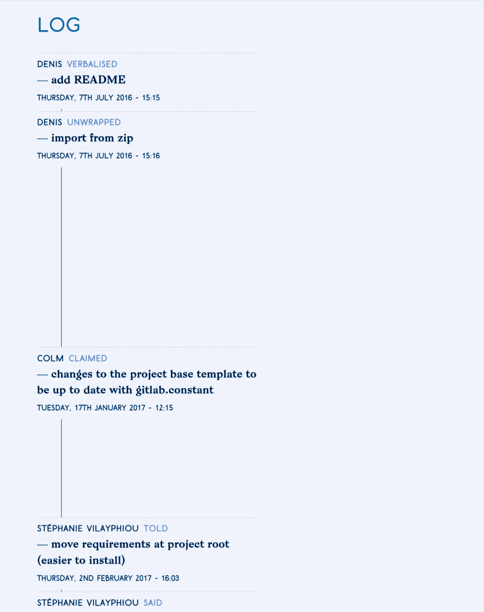
Visualisation de l'historique des avancées sur le site d'OSP.
Collectif OSP. Visual Culture, 2014. [en ligne], disponible sur :
http://osp.kitchen/tools/visualculture,
consulté le 3 janvier 2021.
Liens au libre
Visual Culture est ainsi un outil qui me semble complémentaire à
une pratique du graphisme qui se veut plus ouverte, puisque c'est
un projet qui permet une collaboration et une étude approfondie
des fichiers réalisés par les créateurs, en présentant
l'historique des images, des typographies, ainsi que les choix qui
ont mené à appliquer ces diverses modifications. Ce projet offre
une autre approche du graphisme, dans laquelle la notion de
partage de la connaissance est au centre de la création puisqu'il
s'enracine dans la dynamique des logiciels libres. Il
a pour but
de partager des méthodes de collaboration très utilisées dans le
milieu du développement, de les rendre accessibles à un public de
professionnels de l'image.
Cette méthode de travail, qui est aujourd'hui très répandue dans
le monde de la programmation, me paraît représenter une voie
intéressante pour la pratique du graphisme, puisque plus qu'un
système de versionnage, Visual Culture s'inscrit dans une démarche
ouverte, qui permet de transmettre la pratique du graphisme, son
fonctionnement, d'ouvrir les connaissances à tous. Mais qui permet
également, me semble-t-il, d'avoir un outil qui pourrait mieux
présenter les différentes versions et évolutions d'un fichier ou
d'un projet avec un client, mieux réadapter un design en ayant
accès à ses anciennes versions, et tout cela de manière
simplifiée, avec un système d'archivage puissant.
The stagnation of the design tool landscape led to the progressive
invisibility of design software in designers practice.
Experienced designers know that off-the-shelf, general software
tools obscure the potential of software as a medium for expression
and communication. Writing custom, unique tools with software opens
new potentials for creative authorship.
Reas, C. & McWilliams, C. 2012. Programmer avec Erik van Blokland, Catalogtree,
Amanda Cox,
Nicholas Felton, FIELD, LUST, Boris Müller, onformative, Jonathan
Puckey, Sosolimited & Trafik, Graphisme en France,
code<>outils<>design. Centre National d'Art Plastique.
Why couldn't we accept that tools influence us and that we
could choose them depending on their impact ? Shouldn't we ask
ourselves which tool is appropriate before mechanically resorting to
our usual software ?
Donnot, K. 2011. Outil Numérique et Design Graphique. Thèse, École des Beaux-Arts de
Rennes.
That is why, for example, a command approach to perform alignment
does not necessarily ease designers’ work. In fact, this approach
limits exploration.
Therefore I argue that we need to preserve the power of graphical
user interface tools while enhancing them with more computational
power.
Cette thèse de doctorat en Interaction Homme-Ordinateur a été
réalisée en 2017 par Nolwenn Maudet [designer d'interaction et
chercheuse en design], qui travaille notamment au sein du
collectif BAM [un studio de design favorisant l'autonomie du
designer et de l'utilisateur dans ses productions]. De fait, cet
écrit prend un ton académique, presque scientifique puisqu'il va
avoir une démarche fortement basée sur des pratiques que l'on
retrouve au sein de la culture scientifique, avec différents tests
proposés directement à des designers. Nolwenn Maudet explore le
fond tant que la forme des logiciels de production
graphique, et
remet en question le fonctionnement de ces logiciels, en
les
opposant à la manière de créer et d'utiliser les outils des
designers aujourd'hui. Elle met en avant d'autres manières
d'imaginer le logiciel du graphiste, notamment au travers
du
développement et d'outils qui proposent plus de liberté. En effet,
les logiciels actuels, et notamment ceux de la suite Adobe
Creative Cloud [suite de divers logiciels créatifs
propriétaires
appartenant à Adobe], n'ont que très peu évolué depuis les 3
dernières décennies et sont devenus tellement omniprésents
aujourd'hui que l'on a tendance à omettre de les questionner : ils
en deviennent alors invisibles.
Cette thèse porte donc sur un décalage entre la pratique
quotidienne des graphistes et les outils actuels du design
graphique qui sont proposés. Ainsi, les outils de conception
traditionnels tels que la suite Adobe dissocient la créativité de
l'utilisation de l'outil, en priorisant plutôt des valeurs comme
l'efficacité et la facilité d'utilisation, qui permettraient
d'avoir plus de temps pour être créatif. La thèse se décompose en
deux grandes parties, présentant en tout 13 chapitres. Dans la
première partie de sa thèse, Nolwenn Maudet étudie les pratiques
des designers, au travers d'outils numériques qui permettent une
étude de leur comportement au quotidien ou directement dans les
logiciels qu'ils utilisent. Ces études sont basées sur 4
principes
utilisés par les graphistes, tels que la couleur, l'alignement, la
mise en page, et la collaboration.
Dans une seconde partie, une fois ces pratiques définies par une
étude approfondie des comportements des designers graphiques et de
leur nécessité, l'auteur s'intéresse à la création d'outils de
conception qui soutiennent ces principes majeurs et leur
exploration par des designers. Nolwenn Maudet propose ainsi de
repenser les logiciels de conception, de les transformer
pour en
outre rapprocher la pratique du développement, en la liant à
l'interface graphique. Le développement informatique est en effet
une pratique vers laquelle se tournent de nombreux designers afin
de retrouver une plus grande liberté dans leur conception. Dans
l'optique de repenser son rapport à sa pratique, et donc à
l'outil, cette notion d'invisibilité de l'outil me semble très
intéressante. En effet, la pratique du designer revient sans cesse
à questionner les outils qui peuvent lui servir pour une tâche
autant que pour un résultat donné, comme on questionnerait le
choix d'utiliser une imprimante laser plutôt qu'une risographie.
L'outil, notamment pour le designer, n'est pas quelque chose qui
est censé aller de soi ; il engendre des questions esthétiques,
techniques, voire même parfois éthiques, qui font partie du
processus de création et ne devraient pas être prises comme
acquises.
Liens au libre
Par ailleurs, au sein de sa thèse Nolwenn Maudet présente la
création de ces outils basés directement sur la pratique des
graphistes, et la manière avec laquelle ces derniers se
réapproprient ces outils en les adaptant à une pratique plus
personnelle. Cette réappropriation passe par une possibilité
accrue d'adapter ses outils. Ils peuvent de fait évoluer par leur
flexibilité, permettant de créer des outils puissants. Cette
manière d'imaginer l'outil du graphiste comme malléable s'inscrit
complètement dans l'éthique hacker, mais aussi dans la démarche
libre, et se rapproche de fait des outils libres actuels qui ont
tous cette capacité d'adaptation par la programmation [directement
en ligne de codes ou par de la programmation
visuelle].
Autre fait intéressant qui n'est mentionné qu'à la fin du site, cette thèse a
été rédigée uniquement sous logiciels libres en
utilisant le
format web avec du HTML, et la thèse imprimée a été exportée en
utilisant HTML2PRINT [logiciel de PAO développé par OSP, qui
utilise les langages du web et permet de convertir une page HTML
en document imprimable. Il est d'une certaine manière semblable à
Paged.js]. Par ailleurs, dans la même lignée qu'Anthony Masure,
cette thèse a été publiée sous la licence CC-BY-NC-SA [licence
Creative Commons, un type de licenceopen source très
adaptable.
Ici CC = Creative Commons, BY = communiquer le nom de l'auteur, NC
= non commercial, SA = redistribuer sous la même licence],
intégrant d'autant plus ce document dans une pratique du libre par
l'utilisation de logiciels alternatifs spécifiques qui
permettent
de passer du format Web à l'imprimé.
Design et humanités numériques
Anthony Masure. Design et humanités numériques, Paris : éd.
B42, coll. Esthétique des données, 2017.
Les icônes remplacent les lignes de commande qui se voient
refoulées un peu plus en profondeur à chaque itération du système
d'exploitation, limitant d'un côté nos possibilités d'accéder au
centre technique des machines, et permettant, d'un autre côté, à de
plus en plus de personnes d'accéder au monde du computationnel.
Design et humanités numériques, p. 25
Le design apparaît comme la nouvelle fondation pour la
conceptualisation et la production des connaissances.
Anne Burdick, Johanna Drucker, Peter Lunenfeld, Todd Presner,
Jeffrey Schnapp ; Digital_Humanities, op. cit., p. 117.
Design et humanités numériques, p. 32
Où situer alors le travail du designer ? Travaille-t-il pour
l'utilisateur ou pour le profit des usages que les firmes privées
souhaitent faire de cet espace ?
Design et humanités numériques, p. 57
Celui qui est au service de n'est pas libre, il cherche, dit
Montaigne, à s'enrichir.
Design et humanités numériques, p. 60
Les logiciels dits de création jouent un
rôle
essentiel, puisque leur appellation même indique un nœud entre les notions de
programmes (supposant une modélisation) et de créativité (qui ne
peut avoir lieu sans écarts).
Design et humanités numériques, p. 67
La chaîne graphique se réduit ainsi progressivement à un seul
acteur qui concentre tout le pouvoir dans un schéma pyramidal.
Design et humanités numériques, p. 70
Citations tirées de l'ouvrage : MASURE, Anthony.
Design et humanités numériques, Paris : éd. B42, coll.
Esthétique des données, 2017.
Le designer et ses outils
Design et humanités numériques est un essai rédigé de mars 2015 à
mai 2017 par Anthony Masure, chercheur en design. Le livre a été
publié en 2017 en tant que premier livre de la collection
Esthétique des données aux éditions B42 [réputée pour ses ouvrages
consacrés au domaine du design et de l'art], mais aussi comme
premier texte sous licence libre de la maison d'édition. Ce
texte
est ainsi un essai qui questionne et met en relation le design et
les humanités numériques, pour une collection qui portait à
l'origine le nom de 404. Le travail sur cet essai est issu de la
proposition de Nicolas Thély [chercheur et professeur en art,
esthétique et humanités numériques] qui était dans le jury de
thèse d'Anthony Masure, et lui a proposé de rédiger un
prolongement de sa thèse.
Ce livre prend deux formes : une forme imprimée qui reprend une
partie de sa thèse, et en extrapole une autre au travers de 7
chapitres qui peuvent être lus indépendamment, et un site web
qui
contient des contenus complémentaires. Cette seconde partie en
ligne permet d'avoir accès librement à des contenus
complémentaires tels que des images, des descriptions et analyses
d'objets, qui ont été retranchés de la version imprimée pour des
questions de place et d'encombrement liées à une volonté
d'accessibilité. Accessibilité notamment économique mais aussi due
à son format réduit. Le site permet dès lors de trouver des images
qui complètent ces contenus, et le site devait également proposer
un an plus tard une version de l'ouvrage sous licence libre
dans
son intégralité.
À travers cet essai, Anthony Masure tente de nous faire prendre du
recul sur les liens qui peuvent exister entre le design et les
enjeux de ce que l'on appelle recherche et développement. Il
lie alors le design aux humanités numériques, qui pourraient être
définies comme l'association de pratiques savantes en littérature,
en sciences humaines, avec des matériaux numériques de tous
ordres, qu'ils soient logiciels ou matériels.
Ainsi, ce qui rapproche selon lui ces deux domaines est que les
humanités numériques, à l'instar du design, sont aujourd'hui
confrontées à des processus numériques depuis de nombreuses
années. Il est de fait logique que ces deux champs se rencontrent,
autant dans la production que dans la transmission des savoirs, au
travers des matériaux numériques. Au sein de l'essai, il développe
le fait que le domaine de la recherche et du développement est
aujourd'hui soumis à des exigences de rentabilité, et qu'il semble
que le design connaisse fréquemment, en tous cas dans le langage
commun, l'objectif de faire vendre.
Il souhaite de fait remettre
en question ce point de vue, avec une idée du design qui pourrait
au contraire déjouer ces attendus de rentabilité qui peuvent venir
normer nos environnements [on peut le voir notamment au travers de
systèmes d'exploitation tels que Android et
iOS, qui sont de plus
en plus semblables à chaque itération, ou même au travers de sites
web de vente, utilisant toujours les mêmes structures]. Le
design
devrait venir en opposition à cette évolution actuelle de notre
paysage, et devrait entamer des réflexions visant à réinventer nos
cadres de vie, à questionner de nouveau ce qui existe avec
l'apport du numérique, plutôt que de seulement l'adapter. Ainsi,
dans le cadre de la recherche d'Anthony Masure, le design n'a pas
seulement pour vocation de mettre en forme des contenus produits,
mais il peut aussi re-questionner la façon même de produire les
savoirs, que ce soit par leur valorisation, leurs formes
graphiques, ou même les différents médias sur lesquels ceux-ci
s'inscrivent.
Anthony Masure défend ainsi l'idée que le design a
plus qu'une simple valeur d'exposition, de besoin ergonomique, qui
peut mener à de plus en plus de normes. Il a une capacité de
transmettre le savoir au moyen de démarches qui peuvent être plus
expérimentales, et notamment au sein des Humanités Numériques. De
fait, comme il le dit dès la fin de son introduction, il y a de la
place pour une autre forme de design, qui ne suit pas la seule
logique industrielle.
Liens au libre
Pour la suite, je me suis alors plutôt intéressé au troisième
chapitre, intitulé “L'injonction à la créativité et à
l'innovation”, de la page 57 à 73. Ici, Masure s'intéresse à la
place de la productivité et au terme d'innovation dans le champ du
design [et notamment du logiciel], à ce qui permettrait de
déplacer des habitudes, des attendus, que l'on impose au design ou
que le design s'impose parfois à lui-même. Ce qu'il redoute est un
design à sens unique, tourné vers une logique d'efficacité, mais
qui risque de ce fait d'être de plus en plus normé. Au contraire,
il aimerait aller vers un design qui active une pluralité de
possibles, qui ne soit pas à sens unique. Il cherche des questions
plus ouvertes que le seul objectif d'être une machine à produire,
ce qui est notamment mis en avant par la Suite Creative Cloud,
fonctionnant comme une injonction à la créativité, à la nécessité
d'être créatif.
Dans une première partie introductive, Masure pose
de nombreuses questions, et notamment celles-ci : Où situer
alors le travail du designer ? Travaille-t-il pour l'utilisateur
ou pour le profit des usages que les firmes privées souhaitent
faire de cet espace ? (p. 57). Ces dernières me semblent
intéressantes, car elles posent une question fondamentale sur le
design qui me semble bien lié à la pratique du libre. Le libre,
par son fonctionnement, donne un accès complet à la connaissance
de son outil, en autorisant à faire ce qu'on veut du programme,
tout cela dans un objectif de donner une liberté totale à
l'utilisateur. Cette volonté est apparue en opposition aux
logicielsprivateurs [qui privent
l'utilisateur des
libertés
définies par le logiciel libre], qui peuvent avoir
pour objectif
premier de se servir de l'utilisateur, et non pas de le servir.
La deuxième partie continue de poser cette question de service,
notamment à travers cette citation : Celui qui est au service
de n'est pas libre, il cherche, dit Montaigne, à s'enrichir.
(p. 60). Il revient sur l'utilisation d'interfaces simplifiées, et
de fait vantées par les sociétés, mais qui en réalité sont une
expérience réfléchie de bout en bout afin d'absorber le temps de
l'utilisateur. Est-ce vraiment là le travail du designer ? De
fait, comme pour le logiciel, il me semble que le designer
doit
avant tout créer en ayant pour objectif de servir l'utilisateur,
et non pas de l'utiliser dans des objectifs de rentabilité à la
manière d'Instagram et de son design créé pour capter l'attention.
L'objectif est d'avoir une pratique la plus transparente possible.
Dans un troisième temps, Masure présente les différences
fondamentales entre le design innovant et le design inventif. Le
terme innovation n'est pas historiquement issu du champ du design.
Il vient plutôt du milieu de la gestion, de l'économie, du brevet,
de la mise au secret des procédés techniques. De fait, si le
design va trop loin dans ce champ, il risque de se refermer, et de
ne plus être intéressant pour nous en tant que citoyens.
Il
faudrait alors plutôt créer pour l'humain, avoir un travail
créatif pour la vie (p. 67), et de fait les logiciels
dits de création jouent un rôle essentiel, puisque leur appellation
même indique un nœud entre les notions de programmes (supposant
une modélisation) et de créativité (qui ne peut avoir lieu sans
écarts). (p. 67). La quatrième partie développe alors cette
notion de logiciel de création, et notamment le quasi
monopole de
la suite Adobe, qui a créé une chaîne de production qui dirige
toutes les pratiques des designers. La chaîne graphique se
réduit ainsi progressivement à un seul acteur qui concentre tout
le pouvoir dans un schéma pyramidal. (p. 70). En effet, Adobe
est devenu une sorte d'usine du créatif, dans laquelle chacun
utilise les mêmes outils avec une logique de productivité dans le
domaine de la création, mais aussi dans la recherche de clients au
travers de leur plateforme Behance [plateforme web, sorte de
portfolio où les utilisateurs de Creative Cloud peuvent présenter
leurs créations]. Une dépendance est dès lors créée, et notamment
dès l'enseignement, au sein duquel la suite Adobe est privilégiée.
Ceci est d'autant plus néfaste que l'accès aux logiciels
nécessite
un abonnement, et les fichiers créés n'utilisant pas des formats
ouverts, seuls les outils Adobe peuvent les ouvrir, ce qui conduit
à une nécessité pour tous de se soumettre à la suite créative.
Finalement, si le design s'enfonce trop profondément dans le champ
de l'innovation autant que dans celui de la créativité, il risque
de se refermer et ne plus être intéressant pour nous. Au
contraire, en tant qu'être humain et designer, il vaudrait mieux
concevoir des objets, des systèmes techniques plus ouverts, plus
libres, mieux partagés. Et ceci notamment dans des logiques d'open
source et de libre accès aux techniques ainsi qu'aux savoirs.
Autre fait intéressant concernant cette fois-ci la vente du livre
en lui-même : il n'y a eu aucun problème de vente, malgré une
licence libre qui rendait de fait le texte accessible
librement.
De la même manière, même si sa thèse était sous licence
libre, un
éditeur est venu vers lui afin de la faire publier, et les stocks
ont été écoulés en moins d'un an, provoquant de fait un nouveau
tirage. Il semble donc qu'en plus d'être bénéfiques à la pratique,
les licences libres n'empêchent pas la vente de produits.